PSC Mostly Music
Mostly Music: Pacific Science Center: 1997
musiclogo.html
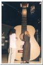
bigguitar2.html
jukebox.html
changetune.html
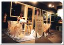
justfortots.html
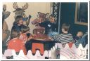
totsmusic.html
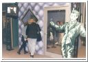
karaoke.html
karaoke2.html
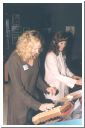
melodymakers.html
melodymakers2.html
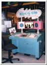
mixingband.html
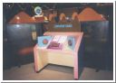
overtones.html
resonance.html
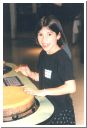
rytham.html
singingbowls.html
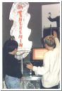
theramin2.html
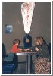
tonalrecall.html
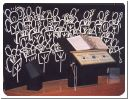
maestro.html
conductband.html
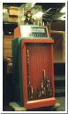
critic.html
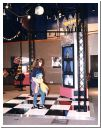
divideddancer2.html
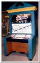
dotslines.html
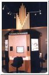
explorinstru.html
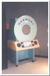
harmonydiscon2.html
Return to PSC Photos Menu
Copyright
David Taylor
2001